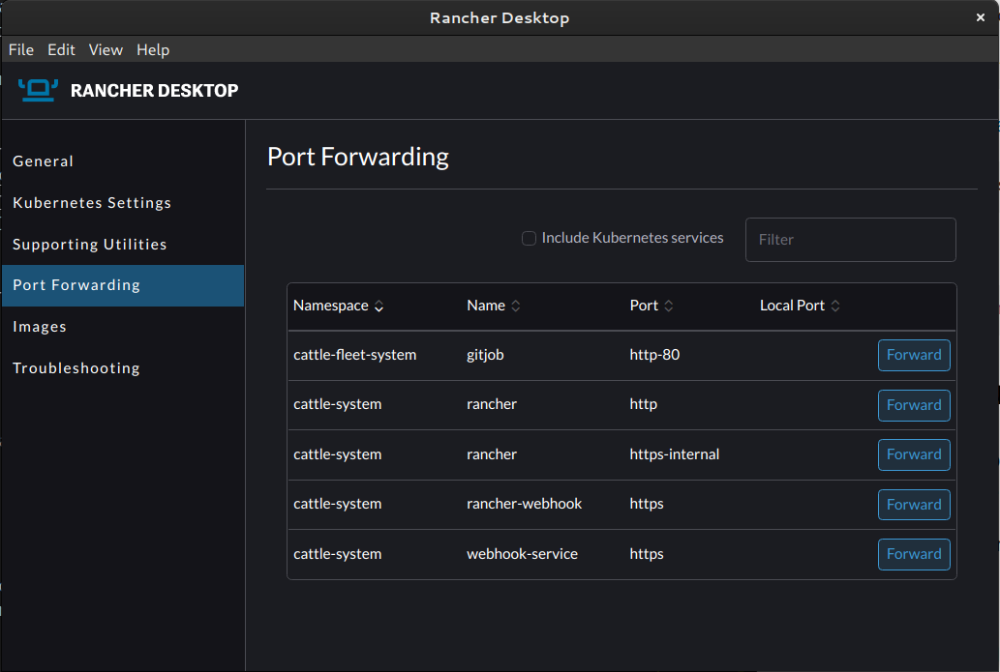
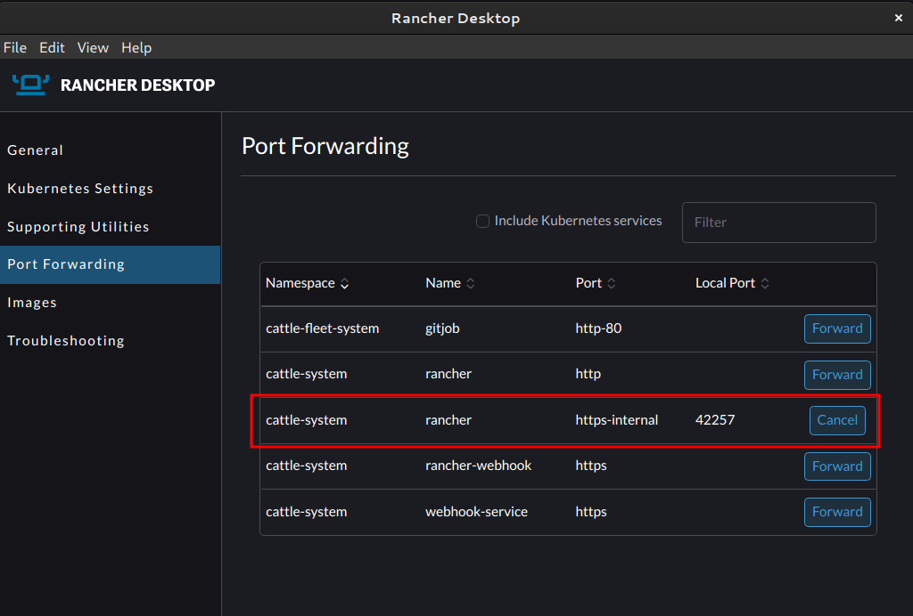
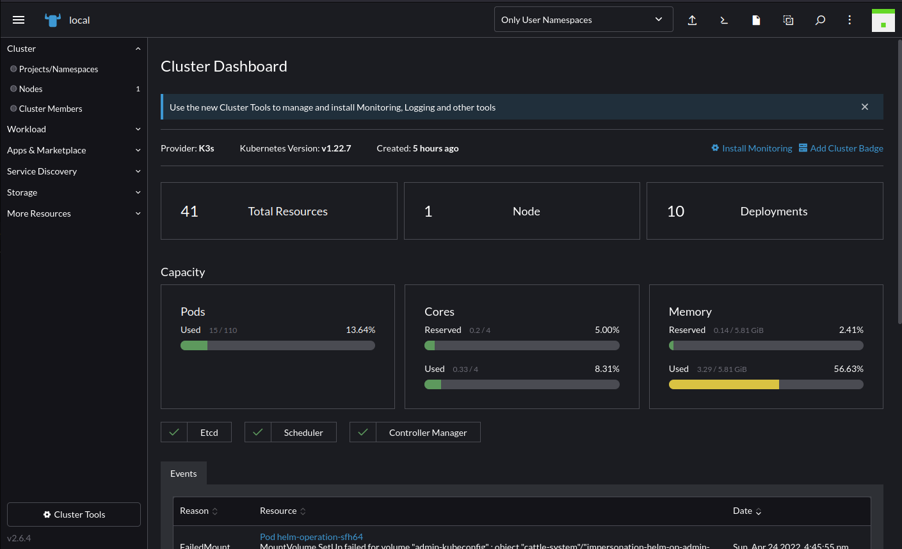

Personal Kubernetes Infrastructure
Initial Setup
This are initial notes from Tim on setting up a personal docker, rancher desktop and rancher server testbed environment.
I started by setting up rancher desktop on my Fedora based linux laptop. I used the appimage (despite a concerning looking warning that firefox gives about the image when downloading it.)
Here is the installation guide.
Note: After upgrading to fedora 36 rancher desktop no longer started until I applied the following fix: https://github.com/rancher-sandbox/rancher-desktop/issues/2139#issuecomment-1114933138
Once installed I performed the following commands to do a quick start setup of nginx running in the k8 cluster.
kubectl get nodes
NAME STATUS ROLES AGE VERSION lima-rancher-desktop Ready control-plane,master 80m v1.22.7+k3s1
kubectl create deployment nginx --image=nginx
deployment.apps/nginx created
kubectl get pods
NAME READY STATUS RESTARTS AGE nginx-6799fc88d8-7k4kd 0/1 ContainerCreating 0 10s
kubectl describe nginx-6799fc88d8-7k4kd
error: the server doesn't have a resource type "nginx-6799fc88d8-7k4kd"
kubectl describe pod nginx-6799fc88d8-7k4kd
Name: nginx-6799fc88d8-7k4kd Namespace: default Priority: 0 Node: lima-rancher-desktop/192.168.5.15 Start Time: Sat, 23 Apr 2022 22:57:06 +0100 Labels: app=nginx pod-template-hash=6799fc88d8 Annotations: none Status: Running IP: 10.42.0.9 IPs: IP: 10.42.0.9 Controlled By: ReplicaSet/nginx-6799fc88d8 Containers: nginx: > Container ID: containerd://f85e833716a254f9e981ebf6c0f432edab366aacdfa74cc46b84904e6afc8760 Image: nginx > Image ID: docker.io/library/nginx@sha256:859ab6768a6f26a79bc42b231664111317d095a4f04e4b6fe79ce37b3d199097 Port: none Host Port: none State: Running Started: Sat, 23 Apr 2022 22:57:23 +0100 Ready: True Restart Count: 0 Environment: none Mounts: > /var/run/secrets/kubernetes.io/serviceaccount from kube-api-access-hl4hc (ro) Conditions: Type Status Initialized True Ready True ContainersReady True PodScheduled True Volumes: kube-api-access-hl4hc: > Type: Projected (a volume that contains injected data from multiple sources) TokenExpirationSeconds: 3607 ConfigMapName: kube-root-ca.crt ConfigMapOptional: nil DownwardAPI: true QoS Class: BestEffort Node-Selectors: none Tolerations: node.kubernetes.io/not-ready:NoExecute op=Exists for 300s > node.kubernetes.io/unreachable:NoExecute op=Exists for 300s Events: Type Reason Age From Message ---- ------ ---- ---- ------- Normal Scheduled 33s default-scheduler Successfully assigned default/nginx-6799fc88d8-7k4kd to lima-rancher-desktop Normal Pulling 33s kubelet Pulling image "nginx" Normal Pulled 17s kubelet Successfully pulled image "nginx" in 16.398944871s Normal Created 17s kubelet Created container nginx Normal Started 16s kubelet Started container nginx
kubectl get pods
NAME READY STATUS RESTARTS AGE nginx-6799fc88d8-7k4kd 1/1 Running 0 44s
kubectl get pods -o wide
NAME READY STATUS RESTARTS AGE IP NODE NOMINATED NODE READINESS GATES nginx-6799fc88d8-7k4kd 1/1 Running 0 57s 10.42.0.9 lima-rancher-desktop none none
kubectl exec -it nginx-6799fc88d8-7k4kd /bin/sh
kubectl exec [POD] [COMMAND] is DEPRECATED and will be removed in a future > > version. Use kubectl exec [POD] -- [COMMAND] instead.
curl 10.42.0.9
Welcome to nginx! html { color-scheme: light dark; } body { width: 35em; margin: 0 auto; font-family: Tahoma, Verdana, Arial, sans-serif; }
Welcome to nginx! If you see this page, the nginx web server is successfully installed and working. Further configuration is required.
For online documentation and support please refer to nginx.org Commercial support is available at nginx.com
Thank you for using nginx.
exit
kubectl get pods
``
> NAME READY STATUS RESTARTS AGE
> nginx-6799fc88d8-7k4kd 1/1 Running 0 2m45s
These steps are verbatim from [this youtube video](https://www.youtube.com/watch?v=LwE8IA3glE4).
From this initial run through we can assume these basic concepts:

## Deploying Rancher on Rancher Desktop
I remember that Dominic explained about namespaces in his initial walk through so let me try to create a new namespace.
```bash
kubectl create namespace tim
While trying to figure out how to list my namespaces, I found this nice k8 cheatsheet.
The above cheatsheet didnt actually contain the tip I needed but a bit of googling came up with this:
kubectl get namespaces --show-labels
NAME STATUS AGE LABELS default Active 141m kubernetes.io/metadata.name=default kube-system Active 141m kubernetes.io/metadata.name=kube-system kube-public Active 141m kubernetes.io/metadata.name=kube-public kube-node-lease Active 141m kubernetes.io/metadata.name=kube-node-lease tim Active 3m34s kubernetes.io/metadata.name=tim
You can see my tim namespace listed as the last entry there. So based on doing that, I think I can update my concept diagram to look like this:

kubectl
apiVersion: v1 kind: Pod metadata: name: nginxpod namespace: tim labels: name: nginxpod spec: containers:
- name: web image: nginx
I saved the above as nginx.yml and was able to run it like this:
kubectl apply -f nginx.yml
Then I could check in the tim namespace to see if it was running:
kubectl get pods -A
NAMESPACE NAME READY STATUS RESTARTS AGE kube-system local-path-provisioner-84bb864455-dsv47 1/1 Running 0 150m kube-system helm-install-traefik-crd--1-xrhvf 0/1 Completed 0 150m kube-system svclb-traefik-p9zwj 2/2 Running 0 150m kube-system helm-install-traefik--1-m2r2x 0/1 Completed 1 150m kube-system coredns-96cc4f57d-5bzj8 1/1 Running 0 150m kube-system traefik-56c4b88c4b-mpwfm 1/1 Running 0 150m kube-system metrics-server-ff9dbcb6c-6gzt5 1/1 Running 0 150m default nginx-6799fc88d8-7k4kd 1/1 Running 0 69m tim nginxpod 1/1 Running 0 14s
We can see my nginx pod in my namespace as the last entry.
Installing Rancher on Rancher Desktop
I went here for instructions.
helm repo add rancher-latest https://releases.rancher.com/server-charts/latest
kubectl create namespace cattle-system
helm install rancher rancher-latest/rancher --namespace cattle-system --set hostname=crest --set replicas=1 --set ingress.tls.source=secret
A little note here: the above tutorial provides different pathways to get a certificate. I am using ingress.tls.source=secret because I am just running on my local sytstem. In production you probably want to use a different option. Also I reduced replicas to 1 since I only have 1 pod in my local test environment.
After running, I got a nice message saying rancher is setting itself up:
NAME: rancher LAST DEPLOYED: Sun Apr 24 11:25:45 2022 NAMESPACE: cattle-system STATUS: deployed REVISION: 1 TEST SUITE: None NOTES:
Rancher Server has been installed.
NOTE: Rancher may take several minutes to fully initialize. Please standby while Certificates are being issued, Containers are started and the Ingress rule comes up.
Check out our docs at https://rancher.com/docs/
If you provided your own bootstrap password during installation, browse to https://crest to get started.
If this is the first time you installed Rancher, get started by running this command and clicking the URL it generates:
echo https://crest/dashboard/?setup=$(kubectl get secret --namespace cattle-system bootstrap-secret -o go-template='{{.data.bootstrapPassword|base64decode}}')
To get just the bootstrap password on its own, run:
kubectl get secret --namespace cattle-system bootstrap-secret -o go-template='{{.data.bootstrapPassword|base64decode}}{{ "\n" }}'
Happy Containering! ```
Let's use our experience from the simple nginx deployment to see what is running on the system now:
kubectl get pods -A
NAMESPACE NAME READY STATUS RESTARTS AGE kube-system helm-install-traefik-crd--1-xrhvf 0/1 Completed 0 13h kube-system helm-install-traefik--1-m2r2x 0/1 Completed 1 13h kube-system svclb-traefik-p9zwj 2/2 Running 2 (10m ago) 13h kube-system local-path-provisioner-84bb864455-dsv47 1/1 Running 1 (10m ago) 13h kube-system coredns-96cc4f57d-5bzj8 1/1 Running 1 (10m ago) 13h tim nginxpod 1/1 Running 1 (10m ago) 11h default nginx-6799fc88d8-7k4kd 1/1 Running 1 (10m ago) 12h kube-system traefik-56c4b88c4b-mpwfm 1/1 Running 1 (10m ago) 13h kube-system metrics-server-ff9dbcb6c-6gzt5 1/1 Running 1 (10m ago) 13h cattle-system rancher-6448c4dcdf-8wpsk 1/1 Running 0 3m37s cattle-fleet-system gitjob-cc9948fd7-jxgg5 1/1 Running 0 44s cattle-fleet-system fleet-controller-5746685958-f4rx5 1/1 Running 0 44s cattle-system helm-operation-zfbfq 0/2 Completed 0 68s cattle-system helm-operation-5sg9s 0/2 Completed 0 16s cattle-system helm-operation-n6ggh 2/2 Running 0 10s cattle-fleet-local-system fleet-agent-6c6c8c45f8-vtbnm 0/1 ContainerCreating 0 7s cattle-system rancher-webhook-6958cfcddf-z9rxr 0/1 ContainerCreating 0 5s
We can see various jobs are still spinning up in the cattle-system.
Next I went on a little detour on creating a self signed certificate that I can install in my rancher instance.
openssl req -new -newkey rsa:4096 -x509 -sha256 -days 365 \
-nodes -out tls.crt -keyout tls.key
Note: I believe it is required to name the key tls.* so as to match the secret name.
Which outputs this:
Generating a RSA private key writing new private key to 'tls.key' You are about to be asked to enter information that will be incorporated into your certificate request. What you are about to enter is what is called a Distinguished Name or a DN. There are quite a few fields but you can leave some blank For some fields there will be a default value, If you enter '.', the field will be left blank. Country Name (2 letter code) [XX]:pt State or Province Name (full name) []: Locality Name (eg, city) [Default City]: Organization Name (eg, company) [Default Company Ltd]: Organizational Unit Name (eg, section) []: Common Name (eg, your name or your server's hostname) []: Email Address []:tim@kartoza.com
Then we have two certs in our directory:
ls
tls.crt tls.key nginx.yml
Then on this rancher page, I followed these notes to install my cert:
kubectl -n cattle-system create secret tls tls-rancher-ingress \
--cert=tls.crt \
--key=tls.key
secret/tls-rancher-ingress created
Ok then back to the main thread of the rancher installation tutorial I continued:
kubectl -n cattle-system rollout status deploy/rancher
Which returns this:
deployment "rancher" successfully rolled out
Testing it out
The instructions say to open the host in your browser (in my case I used my local hostname of crest), but nothing opened.
I took a look in rancher desktop and played with the port forwarding. The default install looked like this:

So I went ahead and tried to forward that rancher port:

Then tried to open https://localhost:37443/
Which gave me an error:

The thing seems to be that you need to rather forward this port:

Then I was able ot open the site (different port number now) an set up my credentials following the hints provided.
Note: Since I am using a self signed cert I had to do the normal firefox security warning process to proceed to the site.

I did however still have some errors now showing in rancher:

Deploying a small application from a helm chart
I know helm charts are like the package managers of kubernetes, but I am not familiar with them, so I went to make a small test with the filebrowser.org (awesome app btw). I found these instructions and so ran and deployed it like this:
helm repo add utkuozdemir https://utkuozdemir.org/helm-charts
helm install my-release utkuozdemir/filebrowser
export POD_NAME=$(kubectl get pods kubernetes.io/name=filebrowser,app.ease" -o jsonpath="{.items[0].metadata.name}
export CONTAINER_PORT=$(kubectl get pod E -o jsonpath="{.spec.containers0].ports[0].
echo "Visit http://127.0.0.1:8080 to use
kubectl --namespace default port-forward $POD_NAME 8080:$CONTAINER_PORT
From this I learned a couple of things:
- We can pull helm charts from the internet with a system of repos
- We can use xpath style queries to parse out bits of info from kubectl
- The last line gives some hints about how to foward traffic out of k8